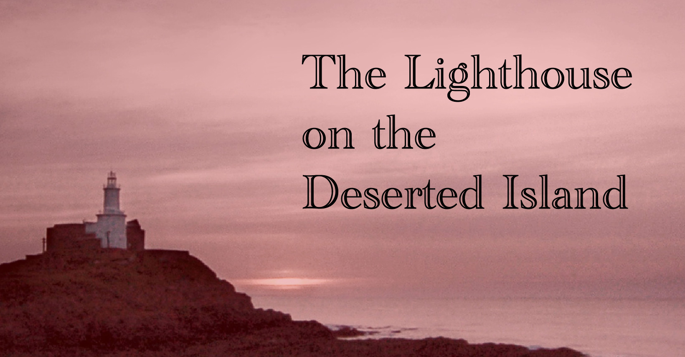

The Lighthouse on the Deserted Island
Rugatha Legends

Rugatha Legends
15022
津菈敎的內戰尚未止息。雖然站在優勢的那一方，Robinson 主教仍苦惱不已。在方努爾市的教堂書庫內，一本被津菈敎典藏的魔法書，「雪の化身の目覚め」遭竊了。究竟是怎麼失竊的？小偷又是誰？雖然線索不足，但是在 Robinson 主教的心中已經有了答案。
津菈敎內戰的反對勢力由人稱「長城爵士」的川納唐普爵士領導。「雪の化身の目覚め」一書極有可能落入他的手中，以扭轉他陷入敗北之地的悲慘命運。
在 Robinson 主教的號招之下，幾名勇者來到了教堂內，接受主教發派的任務—到一座無名小島上，找尋「雪の化身の目覚め」的蹤跡。這幾名勇者包括：地精嘿嘿嘿王子、半身人 Fynn、半獸人 Rayami、妖精 Tyvar、半獸人 Nann，以及人類 Inu。經過主教的說明，以及對賞金的討價還價後，冒險者們來到了方努爾市的港口，尋找傳聞中的瑪琳船長。
路上民眾的眼光沒有離開過這群裝扮奇異，行為更是古怪的冒險者們。終於來到了港口，Fynn 出示了 Robinson 主教給的介紹信後，守衛便將他們帶到了瑪琳船長的船邊。冒險者們陸續與瑪琳船長自我介紹，登上了船。Rayami 興奮地從岸邊直接跳上甲板，驚動了正在甲板上忙碌的船員 Nelson 與他的妻子 Hayes。待瑪琳船長在附近買了頭痛藥，重新登船後，他便拿起噴水器，向新船員們要求乖乖聽話，否則噴水器不會對他們手下留情。
詢問了新船員們的需求後，瑪琳船長指派了最後一位船員，Ryon 去採買 Fynn 提出的菸草，以及 Inu 提出的帳篷與火把。同時間，瑪琳船長也帶著冒險者們在船上熟悉環境：船艙、餐廳、船長室，以及下層貨艙。Nann 對船長室感到十分有興趣，卻在伸手要打開船長室的私人用品櫃時發現被鎖住了。其他人則對地下貨艙中堆積如山的麵包較有興趣。
隨著 Ryon 的歸來，大家紛紛領取貨品後便前往餐廳用餐。餐廳內，Ryon 正和 Nelson 以及 Hayes 說明近期的戰事，Inu 也同時在一旁聆聽，以及詢問關於長城爵士的消息。同時，嘿嘿嘿王子也詢問了關於瑪琳船長與津菈敎之間的事。Nann 身在餐廳，心卻在船長室，想著船長的床，究竟是什麼味道？Rayami 因為不懂普通語，不知道大家到餐廳用晚餐了，因此跑到了下層貨艙大啖麵包。Tyvar 則是躲在船艙內吃自己身上的乾糧。
晚餐後，Rayami 跑到了甲板上，做起了他平日會做的「獸人戰爭體操」。同為半獸人的 Nann 看見此狀，也開始跟著跳了起來。而身為戰爭牧師的 Tyvar 對此頗有意見，親自示範了正確的戰爭體操給他們看，他精湛的演出讓兩位半獸人感到無地自容。隨著 Ryon 的告誡，大夥兒才離開甲板，回到了臥艙內。
Fynn 拿了整盒方才取得的高級雪茄，想漫步到甲板抽根菸。他分享給了跟在後頭的 Nann 以及正在甲板上清潔的 Ryon 各一根雪茄。夜色被雲霧給遮蓋住，散發出一股不安的氣息。遠處傳了一陣如咒語般的吟唱聲。Fynn 和 Nann 都深刻感到一股惡寒，以及一道妖異的紅光，在黑夜中閃耀。Ryon 見狀不妙，趕緊到船長室告知瑪琳船長。瑪琳船長來到了甲板，想利用望遠鏡觀測，船卻撞上了什麼似的劇烈晃動。瑪琳船長請 Fynn 和 Nann 到臥艙將夥伴們叫上甲板。
從臥艙往甲板的路有些狹窄，嘿嘿嘿王子突然想起自己的隨身物品還放在臥艙內，於是折返，卻發現臥艙已被海水浸入。黑暗的甲板上，Inu 想在甲板上生火，以照亮視野，Tyvar 見狀趕緊阻止，並利用法術將 Inu 的褲襠點亮，作為替代方案。
在船長的安排下，Nann 和 Rayami 協助將左側的救生艇從船上放下，而 Nelson 和 Hayes 則將右側的救生艇放下。積極的 Rayami 一馬當先，卻在不理解滑輪和繩索的結構下，意外將降下救生艇的機關徹底破壞。瑪琳船長見狀，趕緊前往救援。在嘿嘿嘿王子一發火球的協助下，左側的救生艇終於放下，Ryon、Tyvar、Rayami、Inu、Nann 和 Fynn 等人隨著左側的救生艇降到了海面；瑪琳船長、Nelson、Hayes 和嘿嘿嘿王子則搭上右側的救生艇。
兩艘救生艇漸行漸遠。到了荒島的岸上時，兩群人已經遙遠到見不到彼此的蹤影了。
跟隨著紅光，Nann 和 Rayami 將救生艇划向了荒島的沙灘上。疲憊的大家在沙灘上快要睡去，但是伴隨著他們的是一股詭異的刺骨之寒，因此在 Rayami 和 Nann 的體力活下，砍下了一些柴，並生起了火，大家圍繞著火堆，才漸漸睡去。
另一艘救生艇上，瑪琳船長遞給了嘿嘿嘿王子一件禦寒的外套，上面充斥的不是嘿嘿嘿王子想像中女子的香氣，而是一陣極為濃厚的男子氣味。在瑪琳船長的導航下，他們停在了一處懸崖底下的沙灘旁。跟隨著詭異的紅光，四人爬上了山坡，向紅光的來源—懸崖上的燈塔前進。也因為逐漸寒冷的氣溫，眾人更不假思索的闖入了燈塔內。燈塔的一樓有廚房、休息室，以及兩間臥室。經過調查後，出乎眾人的意料，大家發現廚房內儲藏櫃內還有可以食用的糧食。憑著自身的夜視能力，嘿嘿嘿王子帶領大家到室外收集了一些柴火，帶回燈塔內，但是他們卻在森林中發現了一具乾枯卻沒有明顯外傷的屍體，最終他們決定將屍體帶回燈塔內，以便後續調查。在燈塔內，嘿嘿嘿王子與瑪琳船長繼續調查，發現了在休息室內的窗戶都被木板給釘死了。同時，嘿嘿嘿王子也在其中上鎖的金屬置物櫃內找到了一把長劍。
另一群登島的冒險者們在短暫的睡眠後醒來。眾人在狀態不佳的情況下，終於也找到了燈塔，便趕緊進了燈塔內，也終於見到了走散的其他夥伴們。
在繼續進行的調查中，嘿嘿嘿王子在臥房中找到了大量散落的紙張。將手寫的草稿收集並重新整理後，嘿嘿嘿王子發現這些手稿應該是針對雪の化身の目覚め書中內容的註記，但是由於內容繁多且似乎牽涉了複雜的魔法，嘿嘿嘿王子必須在不受干擾的情況下花足夠的時間才能讀完。在休息已充足的條件下，Tyvar 接手了閱讀手稿的任務，而瑪琳船長也指派因較早開始休息，精神較為飽滿的 Nelson 與 Hayes 前往收集更多木材。
撿完木材並回到燈塔內的 Nelson 與 Hayes 選擇到了二樓的臥房休息。經過簡單閱讀後，Tyvar 發現手稿主要分為四個部分：冬天之主的介紹、召喚冬天之主的儀式與活祭的奉獻、冬天之主的奴僕，以及面具。興奮的 Tyvar 用了三倍大的音量向眾人說明自己得到的資訊，卻被在二樓休息的 Nelson 訓斥，表示自己的太太還在休息，請 Tyvar 放低音量。稍有收斂的 Tyvar 還是讓 Nelson 感到不滿，而決定獨自外出收集更多木材。在 Tyvar 的說明下，大家理解到雪の化身の目覚め是用來召喚冬天之主的魔法書。冬天之主會伴隨著寒氣與暴風雪一同現身，當祂的形象具體化的瞬間，將會把週邊變成極寒世界。要成功召喚冬天之主的話需要獻上大量的活祭。另外冬天之主的僕人會嘗試召喚冬天之主。手稿上有記載冬天之主的僕人的召喚儀式以及僕人的弱點是他的冰冷心臟。只要手持炙熱的長槍貫穿僕人的心臟，僕人就會瞬間死亡。
大家聽完 Tyvar 的說明後面面相覷。瑪琳船長詢問了 Nelson 與 Hayes 的去處，得知 Nelson 又到外頭收集木材，而 Hayes 則在二樓休息。大夥兒決定對燈塔的內部繼續進行調查。
前往陰暗的地下室，Tyvar 將 Rayami 身上唯一的裝束：他的內褲，點亮，作為大家的光源。在踏入地下室的那一刻，大家便發現了地上用鮮血繪製而成的巨大儀式圖案，與 Tyvar 在書中看見的圖案一致。Fynn 也在暖爐中找到一根撥火棒。Inu 也在房間內找到了一本日記，內容包含了以下：「這真的是現實會發生的事情嗎？如果這是真實，那麼人類所構築的文明社會到底有多麼脆弱啊……。」、「將神召喚到此……。這個存在卑微且矮小的我將會完全改變這個世界。但是，只有我一個人是辦不到的。要獻上活祭品？還是說需要一個給建議的人？那從者呢？」、「這天終於來了。我將會超越自我存在，看見新世界的曙光…。若能顛覆一個常識，則可以在那裡建構出一個全新的理論。」。
回到一樓閒逛的 Fynn 發現了燈塔的後門，就在他推開後門的瞬間，看見大量殘破的屍塊散落在燈塔後方的雪地。身後的 Tyvar 便趕緊大聲通報大家。眾人來到了雪地探查，卻因為外頭太過寒冷，無法久留，而折返回燈塔內。大家到了二樓 Nelson 與 Hayes 的房間，想在裡頭討論，卻發現門縫散發出了寒冷的氣息—打開門後，迎面而來的是從敞開的窗外撲面的寒氣。還有一股香氣，以及門後有個重物……。是神情恐怖而扭曲的 Nelson 的頭。Fynn 連忙跑回燈塔後門外的雪地，發現屍體是被用蠻力撕碎，並從二樓的窗戶直直拋下，但 Fynn 卻無法從他的記憶中回想起有什麼動物有這般的能力。跟隨在後的 Rayami 則在燈塔周圍，持續尋找線索。
嘿嘿嘿王子接手 Tyvar 閱讀的手稿，試圖將最後的內容讀完，卻屢屢受到打斷，讓他十分氣憤。Inu 則在二樓找到了一間儲藏室，裡面堆滿了各式的儲藏品。
Rayami 繞著燈塔，發現眼前的腳印越來越多、越來越多，這一定是剛剛才留下的！掌握了（他覺得）極其重要的線索，Rayami 趕緊跑回燈塔內，向大家回報。
此時，眾人感到了比過往更加嚴寒的氣息。大家跑到了燈塔外，嘿嘿嘿王子發現燈塔頂端的紅光旁，有個晃動的人影，正吟唱著。嘿嘿嘿王子試圖利用火球攻擊塔頂的人，卻沒有射中，但也打斷了儀式的進行。那黑影從背後長出了翅膀，然後朝樹林飛去。
看見此相，Fynn 掏出了小刀，在自己的手臂上劃了一道切口，並幻化成狼，讓嘿嘿嘿王子跳到他的背上，兩人便朝著森林的彼端衝刺。在 Nann 的呼喊下，Rayami 也拿起了大砍斧，朝著森林奔去。瑪琳船長從地下室拿了撥火棒，遞給 Nann 和 Tyvar。然而因為 Rayami 跑得太快，Nann 和 Tyvar 只能朝著遠處內褲發出的光芒，追蹤 Rayami 的方向。越跑越遠，嘿嘿嘿王子與 Fynn 也看見數量逐漸增加的動物屍體。而此時站在懸崖頂端的 Inu 看著森林，喊道：
「他們進去森林了嗎？我要對著森林放火。」
Inu，（有極大潛力成為）縱火累犯
瑪琳船長見狀趕緊阻止 Inu。森林中 Tyvar 和 Nann 發現一頭鹿竟然和其他動物朝著不同的方向，向燈塔衝去。Nann 對他射了一發火球，讓小鹿現出了他的真面目—煙霧之中，那雙翅膀再次展開，朝著燈塔頂端飛去。Tyvar 於是利用奇術，大聲喊出怪物朝著燈塔飛去的消息。所有人都聽見了，並掉頭往燈塔奔去。
怪物先飛回到懸崖底下，將屍體拾起後回到了燈塔頂端，繼續吟唱。隨著咒語不斷持續，氣溫陡然下降。回到燈塔下方的 Nann 和 Tyvar 想起了手稿中的文字「只要手持炙熱的長槍貫穿僕人的心臟，僕人就會瞬間死亡」。Nann 將撥火棒遞給 Inu 讓它加熱，然後遞給了 Rayami，用簡單的獸人語解釋作戰計畫：熾熱、長槍、心臟、貫穿。Rayami 點了點頭，然後便透過 Inu 的傳送術來到了燈塔頂端。眼前鮮血繪製而成的召喚法陣與吟唱中的怪物並沒有嚇到 Rayami，他舉起長槍，朝怪物的心臟刺下。怪物發出尖銳的嘶吼聲，然後倒下。
隨著怪物的死去，氣溫很快地就恢復正常，然後變得炎熱。來到塔頂的 Tyvar 看見他們此趟的目標：雪の化身の目覚め，正躺在儀式法陣的正中央。破損了。回到地面的 Tyvar 透過傳訊術，告知 Robinson 主教任務已經完成了，請求他派出船隻來進行救援。
冒險者們鬆了一口氣，卻沒注意到天空中出現的一道裂痕，一隻纏繞著雷霆以及冰雪的手臂從裂縫中向下抓了一把，大家倉皇閃躲。大家以為危機解除了，卻發現 Tyvar 落入了巨掌之中，消失在次元之外了。
數天之後，Robinson 主教派了船隻將冒險者們從荒島送回了方努爾市。冒險者們也將殘破不堪的雪の化身の目覚め交還給了主教，並領取了獎賞。
也因為本次任務對津菈敎的重要性，冒險者們都被津菈敎奉為聖徒，而他們的冒險故事，都將成為津菈敎眾口耳相傳的傳說，永遠流傳。